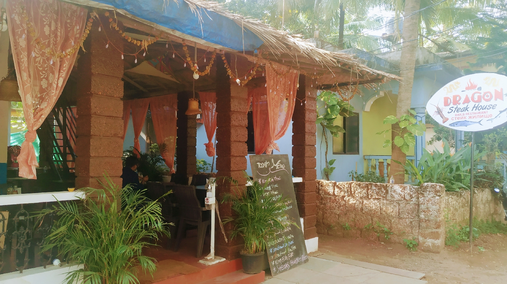

Dragon Steak House stands at Temb Vaddo on Morjim beach, a few steps from the river. The pillars are local laterite, the roof is thatch, and the menu is written fresh each day.
Our idea is simple: cook good food over real fire, lean on the local catch, and welcome everyone like a neighbour. Steaks share the board with Goan fish curry, momos and Thai curries because that is how our guests, travellers and locals alike, like to eat.
Seafood and daily specials, chalked on the board at the door.
Steaks seared over open flame, curries simmered slow, momos steamed fresh.
Friendly service, fair prices and a table with a view, upstairs or down.